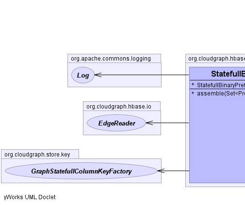
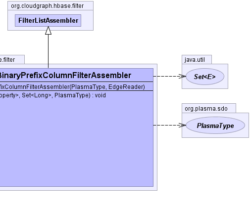

public class StatefullBinaryPrefixColumnFilterAssembler extends FilterListAssembler
StatefullColumnKeyFactory.
HBase filters may be collected into lists using FilterList each with a MUST_PASS_ALL or MUST_PASS_ONE (logical) operator. Lists may then be assembled into hierarchies used to represent complex expression trees filtering either rows or columns in HBase.
GraphStatefullColumnKeyFactory,
StatefullColumnKeyFactory|  |  |
params, rootFilter, rootType| Constructor and Description |
|---|
StatefullBinaryPrefixColumnFilterAssembler(PlasmaType rootType,
EdgeReader edgeReader) |
| Modifier and Type | Method and Description |
|---|---|
void |
assemble(java.util.Set<Property> properies,
java.util.Set<java.lang.Long> sequences,
PlasmaType contextType) |
clear, getFilter, getParamspublic StatefullBinaryPrefixColumnFilterAssembler(PlasmaType rootType,
EdgeReader edgeReader)
CloudGraph® is a registered trademark of TerraMeta Software, Inc. Copyright © 2014 - All Rights Reserved.